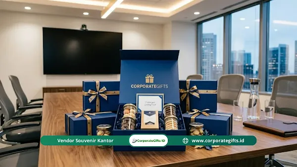

Corporate Gifts ID - Pengadaan dan manajemen souvenir Halalbihalal kantor yang efektif menuntut perencanaan anggaran yang efisien, seleksi vendor terpercaya, serta strategi logistik pengiriman yang aman. Merayakan momen Idul Fitri bersama rekan kerja selalu menjadi momentum tepat untuk mempererat silaturahmi, kolaborasi antardepartemen, dan rasa kebersamaan di lingkungan profesional.
Poin Kunci Manajemen Pengadaan:
- Perencanaan Sejak Awal: Inisiasi pemesanan 4-6 minggu sebelum Idul Fitri guna menghindari peak season logistik nasional.
- Alokasi Anggaran Berjenjang: Pisahkan plafon budget untuk karyawan umum, panitia internal, serta tamu kehormatan dan klien VIP.
- Fokus Nilai Guna: Prioritaskan produk fungsional harian seperti tumbler stainless, sajadah travel, atau lunch set ramah lingkungan.
- Proteksi Ekspedisi Berlapis: Terapkan bubble wrap ganda, bantalan serutan busa, dan palet kayu untuk mengamankan barang pecah belah.
Divisi pengadaan (procurement) dan Human Resources (HR) kerap menghadapi tantangan besar saat menyiapkan bingkisan Halalbihalal karena tenggat waktu logistik ekspedisi nasional yang membatasi pengiriman menjelang libur panjang. Panduan ini mengupas tuntas langkah praktis agar pengadaan berjalan mulus tanpa pemborosan anggaran.
Makna Strategis Pemberian Souvenir Halalbihalal Kantor
Membagikan cinderamata selepas momen Idul Fitri bukan sekadar formalitas tahunan, melainkan investasi emosional yang mengikat loyalitas karyawan dan mitra bisnis:
- Retensi Karyawan Efektif: Apresiasi tulus melalui hadiah berkualitas memperkuat keterikatan psikologis pekerja, yang terbukti membantu menekan angka retensi turnover pasca-Lebaran.
- Penguatan Citra Jenama yang Humanis: Manajemen yang menyediakan bingkisan Halalbihalal elegan dinilai oleh klien sebagai mitra bisnis yang peduli pada nilai kekeluargaan dan budaya Nusantara.
- Fungsi Ganda Penunjang Kerja: Memilih souvenir Halalbihalal kantor yang fungsional memastikan barang terus dimanfaatkan dalam rutinitas kerja harian di meja kantor.
- Penciptaan Memori Kolaborasi Positif: Kenangan indah saat menerima souvenir mempererat interaksi antardivisi, memulihkan energi tim untuk mencapai target kuartal kedua (Q2).
- Bukti Nyata Kepedulian Manajemen: Staf yang merasa dihargai secara personal akan menumbuhkan komitmen kerja yang jauh lebih solid bagi perusahaan.
Waktu Terbaik Memulai Pengadaan Souvenir Lebaran
Menunda pengadaan mendekati hari raya adalah kesalahan fatal yang sering memicu keterlambatan pengiriman, lonjakan biaya mendadak, serta stok barang yang habis di pasaran:
- Inisiasi Sejak Jauh Hari: Tim pengadaan idealnya memulai penjajakan katalog dan vendor sejak bulan Januari atau minimal 6 minggu sebelum cuti bersama dimulai.
- Penyelesaian Rekapitulasi Data Penerima: Pastikan daftar penerima sudah tervalidasi sebelum menerbitkan purchase order (PO) untuk menghindari revisi jumlah mendadak di tengah antrean pabrik.
- Menghindari Lonjakan Biaya (Surplus Cost): Memesan lebih awal melindungi perusahaan dari lonjakan harga bahan baku dan tarif ekspedisi ekspres musiman. Jelajahi aneka tren souvenir Halalbihalal kantor 2026 lebih dini untuk mengamankan kuota bahan.
- Kelonggaran Waktu Quality Control (QC): Jadwal yang longgar memberi kesempatan panitia untuk mengecek sampel cetak logo dan menukar barang cacat produksi sebelum dibagikan.
- Mencegah Kepanikan Panitia: Manajemen waktu yang rapi memungkinkan tim fokus menyusun acara Halalbihalal tanpa terbebani kekhawatiran souvenir yang belum tiba.
Cara Memilih Vendor Souvenir Perusahaan Terpercaya
Memilih mitra vendor yang kredibel adalah pilar penentu keberhasilan acara korporasi Anda:
- Pemeriksaan Portofolio Klien Korporat: Telusuri rekam jejak kerja sama vendor dengan instansi BUMN maupun perusahaan swasta terkemuka. Hindari tergiur penawaran harga yang tidak masuk akal.
- Keahlian Teknik Personalisasi Logo: Pastikan penyedia jasa menguasai teknik cetak modern seperti sablon presisi, bordir komputer, grafir laser, hingga UV print full color.
- Transparansi Status dan Kecepatan Respons: Vendor yang profesional memiliki Customer Service sigap yang memberikan update progres produksi secara berkala tanpa perlu terus ditagih.
- Ketersediaan Sampel Fisik (Proofing Mockup): Selalu minta sampel barang nyata sebelum produksi massal berjalan guna memastikan akurasi warna dan ketahanan bahan.

Proses quality control (QC) dan pengemasan rapi souvenir Halalbihalal kantor sebelum proses distribusi ke penerima.
Standar Alokasi Budget Hadiah Korporasi Ideal
Menentukan alokasi budget berjenjang memastikan anggaran kas perusahaan digunakan secara proporsional sesuai target audiens:
- Tingkat Ekonomis Massal (Rp35.000 - Rp65.000): Ditujukan untuk seluruh staf pelaksana dan peserta gathering skala ratusan orang. Produk unggulannya mencakup sajadah travel saku, tas tote kanvas blacu, atau pouch alat tulis custom.
- Tingkat Menengah Fungsional (Rp75.000 - Rp150.000): Sangat cocok untuk jajaran manajerial dan panitia inti. Opsi terpopulernya adalah tumbler stainless SUS304 insulasi atau lunch box kaca tahan panas.
- Tingkat Eksekutif VIP (Rp200.000 - Rp500.000+): Dirancang eksklusif bagi direksi, komisaris, atau tamu kemitraan eksternal berupa gift set eksklusif dalam balutan exclusive hard box dengan kartu ucapan personal.
Tabel Alokasi Budget dan Rekomendasi Souvenir Halalbihalal
Berikut rangkuman struktur estimasi anggaran dan rekomendasi paket souvenir Halalbihalal yang paling banyak diminati klien CorporateGifts.ID:
| Tingkat Anggaran | Estimasi Biaya / Pcs | Rekomendasi Paket Barang | Sasaran Penerima |
|---|---|---|---|
| Ekonomis Massal | Rp35.000 - Rp65.000 | Sajadah travel pouch water-repellent, tote bag kanvas blacu logo sablon | Seluruh staf karyawan, audiens gathering massal |
| Standar Fungsional | Rp75.000 - Rp150.000 | Tumbler stainless SUS304 laser grafir, lunch box set antibocor, payung lipat UV | Staf tetap, panitia inti, mitra operasional kantor |
| Premium Eksekutif | Rp200.000 - Rp450.000 | Set sajadah tenun premium + tumbler thermal + diffuser aromaterapi dalam hard box | Kepala cabang, manajer divisi, tamu undangan VIP |
| VIP Direksi & Klien | Rp500.000+ | Executive gift set: agenda kulit deboss, power bank nirkabel, plakat kristal optik | Dewan direksi, komisaris, mitra bisnis strategis |
Strategi Pengiriman Aman Khusus Barang Pecah Belah
Jika souvenir Halalbihalal Anda mengandung elemen keramik (cangkir/mug), stoples kaca madu, atau botol kaca aromaterapi, terapkan SOP proteksi logistik berikut:
- Balutan Bubble Wrap Tebal Berlapis: Bungkus setiap unit barang satu per satu dengan minimal 3 putaran bubble wrap sebelum dimasukkan ke dalam boks produk.
- Pemberian Ruang Redam (Void Fill): Masukkan gumpalan kertas kraft tebal atau butiran air cushion agar tidak ada ruang kosong di dalam kardus master logistik yang memicu benturan selama perjalanan truk.
- Palet Kayu untuk Pengiriman Luar Kota: Wajibkan proteksi peti kayu untuk paket yang dikirimkan antarpulau demi menahan beban tumpukan logistik ekspedisi.
- Proteksi Asuransi Pengiriman: Selalu centang opsi asuransi resmi dari pihak ekspedisi guna melindungi nilai finansial pengadaan apabila terjadi kendala di jalan.
- Stiker Fragile Kontras: Pasang label barang pecah belah mencolok di setiap sudut karton agar kurir memperlakukan paket dengan kehati-hatian ekstra.
Kesimpulan
Manajemen pengadaan souvenir Halalbihalal kantor yang terencana dengan baik adalah kunci menyelaraskan anggaran korporasi dengan kepuasan penerima bingkisan. Dengan memesan sejak dini, memilih vendor yang berpengalaman, serta menerapkan proteksi logistik ketat, perayaan silaturahmi kantor akan berlangsung hangat, berkesan, dan membawa citra positif jangka panjang bagi institusi Anda.
FAQ: Pertanyaan Seputar Pengadaan Souvenir Halalbihalal

Ditulis oleh: Arinda Zakia
Senior Corporate Gifting SpecialistSpesialis perencanaan bingkisan korporat musiman, manajemen rantai pasok souvenir B2B, dan kurasi gift set tematik Lebaran di CorporateGifts.ID.
Lihat Profil Lengkap & Panduan Lainnya